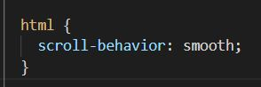
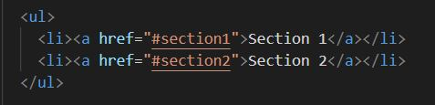

Blog Entry #10
12/2/2021
Smooth Scrolling
Long pages, like Wikipedia, often have navigation links to sections within the page. I was curious as to how this was done, and when I went to research it I found the scroll behavior style tag.
Section 1
Back to TopYou can either statically jump around the page or smoothly scroll. You can set this with the scroll-behavior style tag.
Section 2
Back to TopYou might have noticed the url changed if you clicked the link to get here. This lets you link to a specific part in a webpage externally too.
Linking inside the page is simple. Instead of a url, just give the id of the element you want to link to.
